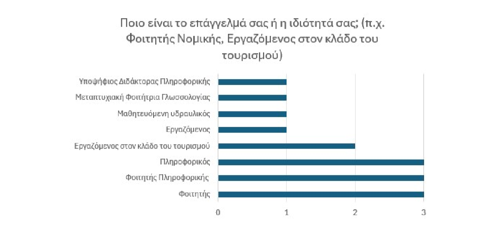
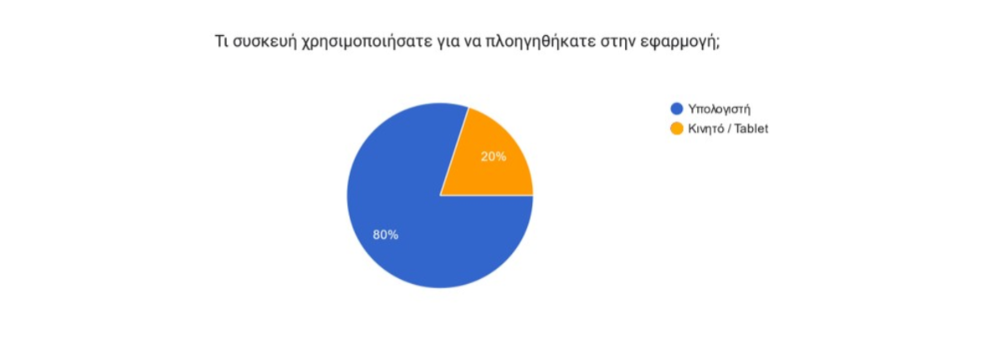
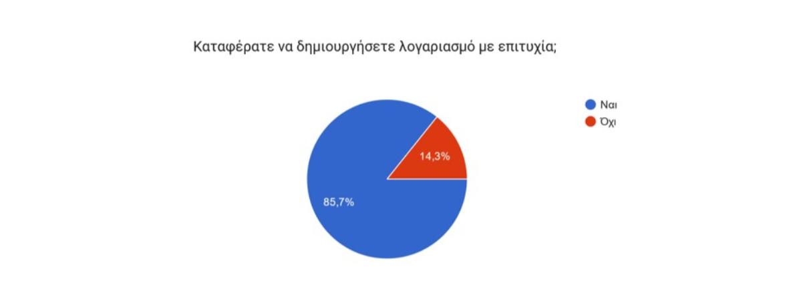
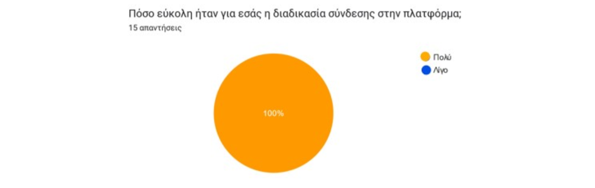
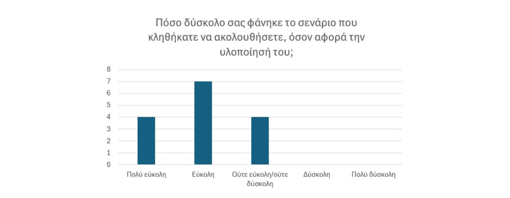
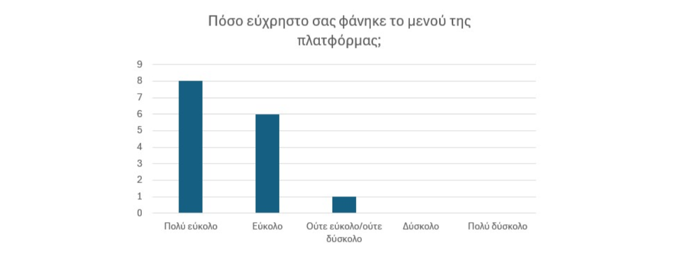
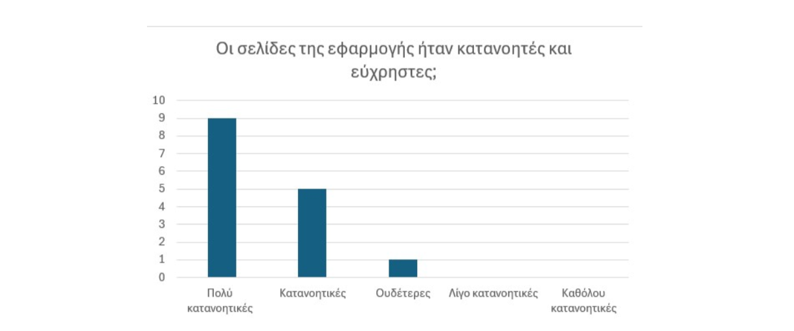
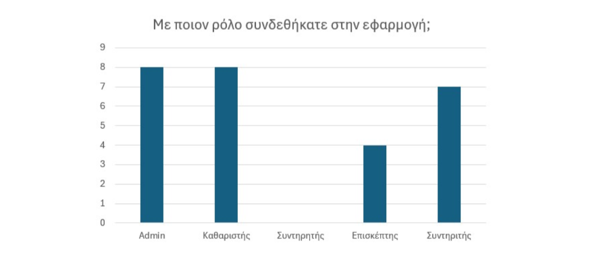
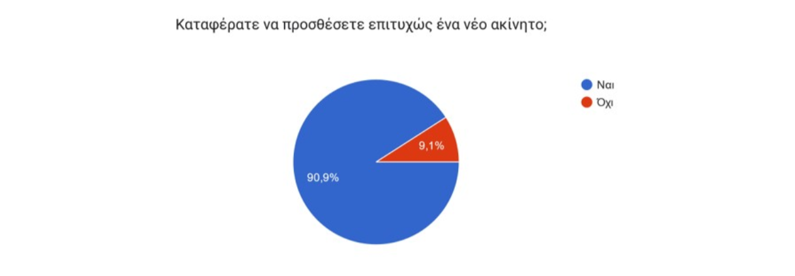
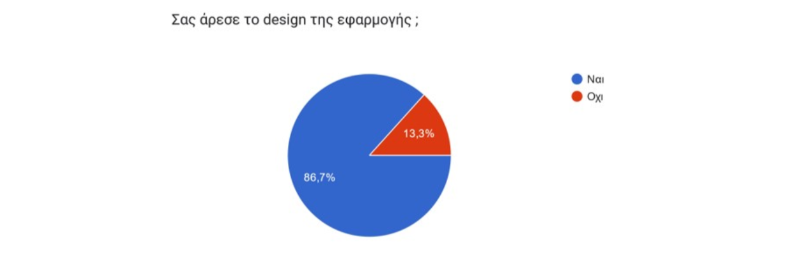

Στην παρούσα πτυχιακή εργασία ερευνάτε η σημασία των ERP συστημάτων στον κλάδο του τουρισμού, καθώς και η διαδικασία ανάπτυξης μιας τέτοιας εφαρμογής. Αρχικά, αναλύεται ο τρόπος με τον οποίο τα ERP συστήματα συμβάλλουν στην οργανωτική δομή μιας επιχείρησης, επιτρέποντας την αυτοματοποίηση διαδικασιών και τη βελτίωση της αποδοτικότητας. Στη συνέχεια, εξετάζεται η διαδικασία ανάπτυξης μιας web εφαρ- μογής, η οποία αξιοποιεί σύγχρονες τεχνολογίες και προσφέρει συμβατότητα τόσο με υπολογιστές όσο και με κινητές συσκευές. Αναλύεται η συμβολή των Frameworks στην ανάπτυξη εφαρμογών και δίνεται ιδιαίτερη έμφαση στα πλεονεκτήματα που παρουσιάζουν στη δομή και την επεκτασιμότητα των εφαρμογών. Σε επόμενο στάδιο, παρουσιάζεται η εφαρμογή που δημιουργήθηκε για τη διαχείριση τουριστικών καταλυμάτων, εξηγώντας τον σχεδιασμό της, τις βασικές της λειτουργίες και τον τρόπο υλοποίησής της. Τέλος, η εφαρμογή αξιολογείται από τους χρήστες, εστιάζοντας στην αξιοπιστία, τη χρηστικότη- τα και τη λειτουργικότητά της, με σκοπό να εντοπιστούν πιθανά σημεία προς βελτίωση και να διαμορφωθούν προτάσεις για μελλοντικές επεκτάσεις.
Το δείγμα των συμμετεχόντων αποτελείται από 15 άτομα. Στο Διάγραμμα 1 απεικο- νίζεται η ιδιότητα των συμμετεχόντων, οι οποίοι, στην πλειονότητά τους, σχετίζονται με τον κλάδο της πληροφορικής. Συγκεκριμένα, το δείγμα περιλαμβάνει 2 άτομα από τον κλάδο του τουρισμού, 7 άτομα που σχετίζονται με την πληροφορική, 3 φοιτητές, 1 μεταπτυχιακό φοιτητή στη γλωσσολογία, 1 εργαζόμενο και 1 εκπαιδευόμενο υδραυλικό Η σύνθεση του δείγματος παρουσιάζει ιδιαίτερο ενδιαφέρον, καθώς υπάρχει μια σαφής συγκέντρωση ατόμων από τον χώρο της πληροφορικής, γεγονός που μπορεί να συμβάλει σημαντικά στον εντοπισμό τεχνικών δυσλειτουργιών της εφαρμογής. Ωστόσο, η ύπαρξη τουλάχιστον 5 ατόμων που δεν σχετίζονται με τον κλάδο της πληροφορικής προσφέρει μια επιπλέον διάσταση στη δοκιμή, καθώς μπορεί να βοηθήσει στον εντοπισμό προβλη- μάτων ευχρηστίας και στη βελτίωση της εμπειρίας χρήστη για άτομα χωρίς τεχνικές γνώσεις
Διάγραμμα 1
Στο Διάγραμμα 2 είναι το ποσοστό τον χριστών που χρησιμοποιεί την εφαρμογή από υπολογιστή ή κάποια κινητή συσκευή. Το 20%, δηλαδή 3 άτομα, χρησιμοποίησε την εφαρμογή από κάποια κινητή συσκευή (κινητό ή tablet).
Διάγραμμα 2
Στην επόμενη ερώτηση, οι συμμετέχοντες κλήθηκαν να απαντήσουν αν κατάφεραν να δημιουργήσουν λογαριασμό με επιτυχία. Από τα 15 άτομα, απάντησαν 14, εκ των οποίων 2 ανέφεραν ότι δεν μπόρεσαν να ολοκληρώσουν τη διαδικασία εγγραφής, όπως φαίνεται στο Διάγραμμα 3. Κατά τη διάρκεια των συνεντεύξεων, προέκυψε ότι οι οδηγίες μέσα από τα σενάρια χρήσης δεν ήταν αρκετά ξεκάθαρες όσον αφορά τη διαδικασία δη- μιουργίας λογαριασμού. Συγκεκριμένα, αρκετοί χρήστες αναφέρουν ότι δεν ήταν σαφές πως, μετά την υποβολή του αιτήματος εγγραφής, απαιτείται έγκριση από κάποιον άλλο χρήστη με δικαιώματα διαχειριστή για να ολοκληρωθεί η εγγραφή. Ωστόσο, όλοι οι χρήστες κατάφεραν να συνδεθούν σε τουλάχιστον ένα λογαριασμό και να πλοηγηθούν στην εφαρμογή, Διάγραμμα 4.
Διάγραμμα 3
Διάγραμμα 4
Το Διάγραμμα 5 δείχνει ότι όλοι οι χρήστες βρήκαν τη διαδικασία σύνδεσης οικεία και εύκολη. Είναι σημαντικό η εφαρμογή να προσφέρει μια φιλική και απλή εμπειρία ήδη από τα πρώτα βήματα. Αυτό συμβάλλει στο να μην προκαλέσει αρνητική εντύπωση στους χρήστες και να διευκολύνει την περαιτέρω αλληλεπίδρασή τους με το σύστημα.
Διάγραμμα 5
Ερω τήθηκαν οι χρήστες αν έχουν να προτείνουν βελτιώσεις ή αλλαγές στη σελίδα εισόδου και στη σελίδα εγγραφής. Απάντησαν 2 χρήστες ότι:
Οι παρατηρήσεις των χρηστών είναι εύστοχες, καθώς ορισμένα λάθη θα μπορούσαν να αποφευχθούν, εάν κατά τη δημιουργία του κωδικού πρόσβασης υπήρχε ένα πεδίο επι- βεβαίωσης. Επιπλέον, σε περιπτώσεις όπου οι χρήστες δεν είναι εξοικειωμένοι με την τεχνολογία, μπορεί να παρατηρηθούν δυσκολίες στον εντοπισμό των πεδίων username και password, γεγονός που ενδέχεται να δημιουργήσει σύγχυση κατά τη διαδικασία σύν- δεσης.
Στο Διάγραμμα 6 απεικονίζεται ο βαθμός ευκολίας του σεναρίου που κλήθηκαν να ακολουθήσουν οι χρήστες. Η κλίμακα κυμαίνεται από 1 (πολύ εύκολο) έως 5 (πολύ δύσκολο). Η πλειοψηφία των συμμετεχόντων (7 άτομα) θεώρησε το σενάριο εύκολο, ενώ 4 άτομα το χαρακτήρισαν πολύ εύκολο και άλλα 4 άτομα το αξιολόγησαν ως μέτριας δυσκολίας.
Διάγραμμα 6
Στην συνέχεια οι χρήστες ερωτήθηκαν για το αν τους δυσκόλεψε κάτι συγκεκριμένο στο σενάριο που κλήθηκαν να απαντήσουν. Στο ερώτημα απάντησαν 2 χρήστες ότι:
Το διάγραμμα 7 απεικονίζει την εμπειρία των χρηστών με το μενού πλοήγησης της εφαρμογής. Συγκεκριμένα, 8 χρήστες το χαρακτήρισαν ως πολύ εύκολο, 6 χρήστες το βρήκαν εύκολο, ενώ 1 χρήστης το θεώρησε μέτριας δυσκολίας. Δεν υπήρξαν απαντήσεις στις κατηγορίες δύσκολο και πολύ δύσκολο, γεγονός που υποδηλώνει ότι το μενού πλοήγησης είναι φιλικό προς τον χρήστη. Αξιοσημείωτη είναι η παρατήρηση ότι ο χρήστης που αξιολόγησε την πλοήγηση ως μέτριας δυσκολίας χρησιμοποίησε μια συγκεκριμένη κινητή συσκευή. Αυτό αναδεικνύει τη σημασία της βελτιστοποίησης του side-menu για κινητές συσκευές, ώστε να διασφαλιστεί ότι είναι εύχρηστο και ανταποκρίνεται στις ανάγκες των χρηστών, ανεξαρτήτως της συσκευής που χρησιμοποιούν.
Διάγραμμα 7
Η επόμενη ερώτηση που κλήθηκαν να απαντήσουν οι χρήστες αφορούσε τυχόν δυσκολίες που αντιμετώπισαν με το μενού πλοήγησης, καθώς και παρατηρήσεις ή προτάσεις βελτίωσης. Οι απαντήσεις που καταγράφηκαν είναι οι εξής:
Η παρατήρηση ότι ίσως το μενού να μην είναι πλήρως κατανοητό για ανθρώπους με- γαλύτερης ηλικίας, παραπέμπει στο οτι παρατηρήθηκαν οι συνέπειες μεταξύ μενού και ονοματοδοσία σελίδων.
Στην επόμενη ερώτηση, οι χρήστες κλήθηκαν να αξιολογήσουν την κατανόηση των σελίδων της εφαρμογής σε μια κλίμακα από 1 έως 5, όπου 1 αντιστοιχούσε σε ’πολύ κατανοητές’ και 5 σε ’καθόλου κατανοητές’, Διάγραμμα 3.57. ΄Ολοι οι συμμετέχοντες (15 άτομα) απάντησαν στην ερώτηση, με τα αποτελέσματα να διαμορφώνονται ως εξής: 9 άτομα θεώρησαν τις σελίδες πολύ κατανοητές, 5 άτομα τις χαρακτήρισαν κατανοητές και 1 άτομο τις βρήκε μέτριες. Τα αποτελέσματα δείχνουν ότι η πλειοψηφία των χρηστών βρήκε τις σελίδες εύκολα κατανοητές, με καμία καταγραφή στις κατηγορίες ’δύσκολες’ ή ’πολύ δύσκολες’, γεγονός που επιβεβαιώνει την αποτελεσματικότητα του σχεδιασμού και της δομής της εφαρμογής.
Διάγραμμα 8
Συμπληρωματικά, οι χρήστες κλήθηκαν να απαντήσουν αν είχαν προτάσεις για αλλαγές ή αν κάτι τους δυσκόλεψε σχετικά με τις σελίδες της εφαρμογής. Οι απαντήσεις που καταγράφηκαν ήταν οι εξής:
Παρατηρείται ότι στους χρήστες δεν ήταν πλήρως κατανοητός και εύχρηστος ο τρόπος με τον οποίο πραγματοποιείται η αποδοχή των νέων χρηστών. Επιπλέον, η λειτουργία της σελίδας To Do δεν ήταν ξεκάθαρη, καθώς ορισμένοι χρήστες δεν κατάλαβαν ότι δεν τους είχαν ανατεθεί εργασίες, με αποτέλεσμα να θεωρήσουν ότι το σύστημα λειτουργεί κανονικά, χωρίς κανένα πρόβλημα. ΄Οσον αφορά τη σελίδα Lost and Found, προτάθηκαν βελτιώσεις, όπως η δυνατότητα προσθήκης φωτογραφιών στα αντικείμενα, η οποία θα βοηθούσε στην πιο σαφή απεικόνι- ση των πληροφοριών. Ωστόσο, η επιλογή προκαθορισμένων τοποθεσιών όπου βρέθηκε ένα αντικείμενο δεν προτιμήθηκε ως υλοποίηση, καθώς ένα αντικείμενο μπορεί να βρεθεί σε διαφορετικά σημεία του ίδιου ακινήτου, για παράδειγμα, στον κήπο ενός καταλύματος.
Το Διάγραμμα 9 παρουσιάζει τις απαντήσεις των συμμετεχόντων σχετικά με τον ρόλο με τον οποίο συνδέθηκαν στην εφαρμογή. Συνολικά, 15 άτομα έλαβαν μέρος στη δοκιμή και ήταν υποχρεωτική η σύνδεση με τουλάχιστον ένα ρόλο. Από το διάγραμμα προκύπτει ότι οι χρήστες επέλεξαν να συνδεθούν με πολλαπλούς ρόλους ώστε να επεξεργαστούν όλες τις πτυχές της εφαρμογής. Η σύνδεση με πολλούς ρόλους βοηθάει στον καλύτερο εντοπισμό αστοχιών.
Διάγραμμα 9
Στην ερώτηση πως θα αξιολογούσατε την χρήση του ημερολογίου οι χρήστες απάντησαν ότι:
Παρά τις παραπάνω παρατηρήσεις, η πλειοψηφία των χρηστών θεώρησε ότι το ημερολόγιο είναι εύκολο στον χειρισμό του, με αρκετούς να δηλώνουν ότι δεν θα άλλαζαν κάτι ή ότι η λειτουργικότητά του είναι σαφής και κατανοητή. Οι παρατηρήσεις αυτές δείχνουν ότι η εμπειρία χρήστη είναι γενικά θετική, ωστόσο, υπάρχουν περιθώρια βελτίωσης, ειδικά σε σημεία όπως η πλοήγηση μεταξύ μηνών και η πιο ξεκάθαρη απεικόνιση της διαδικασίας κράτησης.
Στην ερώτηση πως θα αξιολογούσατε την σελίδα ’To Do’ οι χρήστες απάντησαν:
Οι απαντήσεις των χρηστών σχετικά με τη σελίδα ’To Do’ ανέδειξαν τόσο θετικές εντυπώσεις όσο και προτάσεις βελτίωσης. Ωστόσο, ορισμένοι χρήστες πρότειναν την προσθήκη ενός τμήματος που θα εμφανίζει ολοκληρωμένες εργασίες. Από την απάντηση προκύπτει ότι δεν ήταν ξεκάθαρη η λειτουργία του εικονιδίου για την αποθήκευση του csv αρχείου για τα καθήκοντα των χρηστών. Η απάντηση για τη δυνατότητα τροποποίησης της κατάστασης μιας υποχρέωσης αντί της απλής επισήμανσης ως ολοκληρωμένη, παραπέμπει σε μια διαφορετική προσέγγιση υλοποίησης της εφαρμογής η οποία θα μπορούσε να συμβάλλει και στην σύγχυση που προκάλεσε σε κάποια σημεία το ημερολόγιο. Επιπλέον, διαπιστώθηκε ότι δεν είναι ξεκάθαρη η διαφορά μεταξύ ’To Do’ και ’Notes’, γεγονός που μπορεί να προκαλεί σύγχυση. Να σημειωθεί ότι σκοπός της σελίδας ήταν να επισημάνει στους χρήστες τις αρμοδιότητες τους οπότε, η λειτουργία κρίθηκε αποτελεσματική, αλλά θα μπορούσε να βελτιωθεί περαιτέρω με την ενσωμάτωση αυτών των προτάσεων
Στο Διάγραμμα 10 απεικονίζεται ο αριθμός των χρηστών που κατάφεραν να προσθέσουν ένα νέο ακίνητο. Η ερώτηση απευθυνόταν αποκλειστικά στους χρήστες που συνδέθηκαν με τον ρόλο του Admin. Τα αποτελέσματα δείχνουν ότι η πλειοψηφία των χρηστών ολοκλήρωσε επιτυχώς τη διαδικασία, με μόνο έναν χρήστη να αντιμετωπίζει δυσκολία και να μην καταφέρνει να προσθέσει νέο ακίνητο.
Διάγραμμα 10
Στην ερώτηση αν έχουν οι χρήστες να κάνουν κάποια διόρθωση ή σχόλιο για την δια- δικασία δημιουργίας ενός νέου ακινήτου οι απαντήσεις ήταν οι εξής:
Από τα 15 άτομα οι 4 χρήστες απάντησαν ότι η διαδικασία προσθήκης ενός νέου ακινήτου θεωρείται απλή και γρήγορη από τους περισσότερους, καθώς περιλαμβάνει τόσο βασι- κές πληροφορίες όσο και χρήσιμες λεπτομέρειες για τη λειτουργία των καταλυμάτων. Ωστόσο, εντοπίστηκαν κάποια σημεία προς βελτίωση. Συγκεκριμένα, ένας χρήστης α- νέφερε ότι δυσκολεύτηκε να βρει την επιλογή προσθήκης ακινήτου, γεγονός που δείχνει ότι η πλοήγηση προς τη συγκεκριμένη λειτουργία μπορεί να μην είναι απόλυτα ξεκάθαρη. Επιπλέον, αναφέρθηκε ότι ορισμένα πεδία δεν είναι απολύτως σαφή και ότι θα μπορούσε να υπάρξει καλύτερος έλεγχος τιμών μέσω dropdown menus ή radio buttons, αντί για ελεύθερη καταχώρηση κειμένου, ειδικά σε περιπτώσεις που υπάρχουν προκαθορισμένες επιλογές (π.χ. Yes/No).
Στην ερώτηση πως φάνηκε στους χρήστες η λειτουργικότητα στην σελίδα των Lost and Found απάντησαν:
Από τις απαντήσεις των χρηστών προκύπτει ένα ζήτημα στη λειτουργικότητα, καθώς κατά την προσθήκη ενός νέου αντικειμένου στα απολεσθέντα (Lost and Found), δεν ήταν δυνατή η απευθείας καταχώρησή του ως παραδοθέν. Ωστόσο, αυτό δεν αποτελεί εξ ολοκλήρου λειτουργικό πρόβλημα, καθώς αν ένα αντικείμενο βρεθεί και παραδοθεί αμέσως, τότε ουσιαστικά δεν συνιστά αντικείμενο προς καταγραφή στη λίστα των Lost and Found. Σε μια τέτοια περίπτωση, η προσθήκη του στον κατάλογο ενδέχεται να μην είναι απαραίτητη, αφού η λίστα προορίζεται κυρίως για αντικείμενα που παραμένουν στα αζήτητα και απαιτούν παρακολούθηση μέχρι να επιστραφούν στον ιδιοκτήτη τους. Εκτός από αυτή την παρατήρηση, η συντριπτική πλειοψηφία των χρηστών βρήκε τη σελίδα ευχάριστη και εύκολη στη χρήση, με τη διαδικασία καταγραφής να χαρακτηρίζεται από σαφήνεια και απλότητα. Οι προτάσεις βελτίωσης αφορούσαν κυρίως την προσθήκη φωτογραφιών των αντικειμένων για την καλύτερη απεικόνιση της πληροφορίας, καθώς και τη δυνατότητα αυτόματης επιλογής ενός χρήστη του συστήματος ως ευρετή, αντί της αποκλειστικής εισαγωγής κειμένου. Η αυτόματη συμπλήρωση επιλογής ενός χρήστη κατά την προσθήκη ενός απολεσθέν αποτέλεσε μια αρχική σκέψη για την υλοποίηση της σελίδας ωστόσο απορρίφθηκε, καθώς όταν το αντικείμενο βρεθεί από ένα υπάλληλο θα έπρεπε ο ίδιος να κάνει την καταγραφή. Καθώς, υπάρχει το ενδεχόμενο η επιχείρηση να έχει αναθέσει τη διαχείριση των Lost and Found σε έναν συγκεκριμένο υπάλληλο. Σε αυτή την περίπτωση, η αυτόματη καταχώρηση ονόματος δεν θα ήταν πρακτική, αφού η ευθύνη της καταγραφής μπορεί να μην ανήκει πάντα στο άτομο που βρήκε το αντικείμενο. Αντίθετα, η καταγραφή του ονόματος να γίνεται χειροκίνητα διασφαλίζει ότι η διαδικασία παραμένει ευέλικτη και προσαρμόζεται στις εσωτερικές πολιτικές της επιχείρησης.
Στα Διαγράμματα 11 και 12 η πλειοψηφία των χρηστών έμεινε ικανοποιημένη σε ότι αφορά το UI.
Διάγραμμα 11
Διάγραμμα 12
Στην ερώτηση αν υπήρξε κάτι που θα ήθελαν οι χρήστες να προσθέσουν στην εφαρμογή ή αν υπήρξε κάτι που τους έλειψε απάντησαν ότι:
Από τις απαντήσεις των χρηστών προκύπτει ότι, συνολικά, η εφαρμογή κάλυψε τις ανάγκες τους, καθώς αρκετοί ανέφεραν ότι δεν τους έλειψε κάποια λειτουργία. Ωστόσο, προτάθηκαν κάποιες βελτιώσεις που θα μπορούσαν να ενισχύσουν τη χρηστικότητα της εφαρμογής. Συγκεκριμένα, αρκετοί χρήστες πρότειναν την προσθήκη σύντομων περιγραφών ή οδηγιών σε κάθε σελίδα, είτε μέσω επιπλέον τίτλων είτε με τη μορφή ενός help button, το οποίο θα παρέχει συνοπτικές πληροφορίες για τις δυνατότητες κάθε σελίδας. Αυτή η προσθήκη θα μπορούσε να βοηθήσει ιδιαίτερα νέους χρήστες, ώστε να κατανοήσουν τη λειτουργία της εφαρμογής, χωρίς να απαιτείται πρόσθετη καθοδήγηση ή εκπαίδευση από την μεριά της επιχείρησης. Στην ερώτηση αν οι χρήστες έχουν κάποιο επιπλέον σχόλιο ή παρατήρηση να κάνουν για μελλοντικές βελτιώσεις της εφαρμογής απάντησαν ότι:
Οι απαντήσεις των χρηστών προσφέρουν προτάσεις που αφορούν τόσο τη λειτουργικότητα όσο και τη σχεδίαση της εφαρμογής. Σχετικά με τη χρηστικότητα, επισημάνθηκε ότι στην αποδοχή ενός νέου χρήστη, θα ήταν προτιμότερο το σύστημα να μην επιτρέπει την ολοκλήρωση της διαδικασίας αν δεν έχει επιλεγεί ρόλος, ή να δίνεται η δυνατότητα επεξεργασίας του ρόλου μετά την αποδοχή. Παράλληλα, προτάθηκε να γίνει πιο εμφανές ότι εκκρεμούν νέα αιτήματα εγγραφής, ενδεχομένως με την προσθήκη ένδειξης όπως “Νέα Αιτήματα” στο αντίστοιχο κουμπί διαχείρισης. Οι δυο παρατηρήσεις είναι χρήσιμες για την εφαρμογή και μάλιστα ο περιορισμός σχετικά με τους ρόλους μπορεί να διασφαλίσει την αποφυγή λαθών. Ειδικά που στο υπάρχον σύστημα η επεξεργασία των ρόλων των χρηστών δεν είναι εφικτή. Μια ακόμη ενδιαφέρουσα πρόταση αφορά τη δυνατότητα προσθήκης νέου χρήστη απευθείας από έναν διαχειριστή, χωρίς να χρειάζεται ο χρήστης να κάνει εγγραφή μόνος του, κάτι που θα μπορούσε να βελτιώσει τη διαχείριση του προσωπικού.
΄Οσον αφορά το σχεδιαστικό κομμάτι, οι χρήστες εξέφρασαν θετικά σχόλια για την αισθητική της εφαρμογής, επισημαίνοντας ότι το χρώμα αποπνέει καθαριότητα, ηρεμία και οικειότητα. Παρόλα αυτά, υπήρξαν προτάσεις για βελτίωση του design, καθώς και για βελτιστοποίηση της διάταξης της εφαρμογής, ώστε να καλύπτει μεγαλύτερο μέρος της οθόνης και να προσφέρει καλύτερη εμπειρία χρήστη. Συνολικά, οι χρήστες βρήκαν την εφαρμογή εύκολη στη χρήση, με αρκετούς να δηλώνουν ικανοποιημένοι από τη λειτουργικότητα και το περιβάλλον χρήστη.